1. Introduction and Goals
LoMap es un aplicación solicitada por el ayuntamiento de Bruselas. Esta se encargará de generar mapas personalizados para cualquier ciudadano que desee utilizarla. En este mapa personalizado se pueden almacenar sitios favoritos (de multitud de categorías), reseñas y se puede generar una red de amigos para tener acceso a sus sitios y reseñas.
1.1. Requirements Overview
Requisitos prioritarios:
-
Varias categorías de lugares.
-
Interfaz tipo mapa.
-
Se pueden crer reseñas y comentarios sobre tus lugares.
-
Existe una red de amigos para compartir reseñas, comentarios y lugares.
-
Existirán los filtros para poder visualizar la información deseada en cada momento.
Requisitos de segundo nivel:
-
Incorporar el concepto de ruta que unirá varios lugares.
-
Los establecimientos podrán crear pods de su negocio para interactuar con los usuarios.
-
Poder comparar mapas, aplicando filtros a las comparaciones.
-
Generar boletines de noticias personalizados en función de los lugares favoritos del usuario.
-
Introducir la gamificacón (permitir descubrir lugares, almacenar información sobre ellos,etc)
-
Incorporar los mapas compartidos entre varios usuarios
-
Incluir roles dentro de la aplicación
-
Los dueños de negocios podrán crear sus mapas con lugares recomendados en las inmediaciones de su negocio.
-
Conectar con el libro de direcciones para mostrar información recomendada.
1.2. Quality Goals
Principales objetivos de calidad para satisfacer los intereses de los stakeholders y las necesidades de los usuarios.
| Objetivo | Motivación |
|---|---|
Privacidad |
La privacidad para LoMap es de vital importancia debido a que los datos de los usuarios no deben ser accesibles por terceros no deseados. La información se almacenara en los Pods de cada usuario y la información almacenada en servidores comunes deberá ser minimizada y justificada. |
Flexibilidad |
LoMap debe ser una aplicación flexible que permita su uso en otros contextos geográficos alejados de la ciudad de Bruselas. |
Accesibilidad |
Al ser un producto dirigido a un público general nuestra aplicación deberá cumplir los estándares de accesibilidad. |
Usabilidad |
Cualquier usuario no familiarizado con las aplicaciones y la tecnología deberá poder usar la aplicación. Se cumplirán las recomendaciones de usabilidad que nos brindan los organismos de estandarización. |
Mantenibilidad |
El código de LoMap debe seguir los estándares de diseño adecuados para generar una aplicación mantenible en el futuro. |
Escalabilidad |
LoMap debe ser una aplicación implementada con la intención de crecer y abarcar más funcionalidades. El código escrito debe facilitar esta dinámica. |
1.3. Stakeholders
| Rol/Nombre | Expectativas |
|---|---|
Ayuntamiento de Bruselas |
Entidad solicitante de la aplicación que busca ofrecer un servicio de calidad a sus habitantes. Requiere que se cumplan los objetivos de calidad. |
Ciudadanos de Bruselas |
Quieren que la experiencia de uso de la aplicación al ser presentada por su ayuntamiento sea agradable, sencilla y aporte valor. |
Futuros usuarios |
Necesitan que la solución sea genérica y escalable. |
2. Architecture Constraints
| Tipo de restrición | Explicación |
|---|---|
Restricción temporal |
Tenemos aproximadamente un cuatrimestre para tener una versión de lanzamiento de la aplicación. |
Restricción de alcance |
Esta app debe cumplir como mínimo con diferentes funciones como guardar lugares; asociar puntuaciones, comentarios y/o fotos a los lugares; visualizarlos en un mapa; informarse sobre estos; filtrar las ubicaciones. |
Restricción de modelo |
La información sobre los lugares de cada usuario se debe guardar en su pod personal. Se debe respetar la privacidad de cada usuario en la medida de lo posible. |
3. System Scope and Context
3.1. Business Context
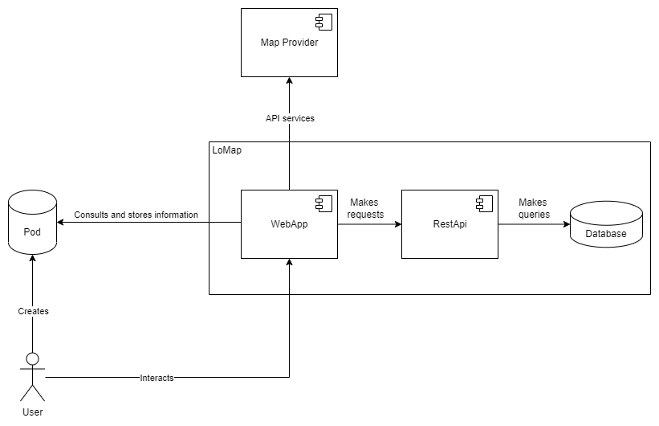
| Entidad | Entrada | Salida |
|---|---|---|
User |
Recibe el feedback proporcionado por la WebApp. |
Crea y guarda en el POD su información personal. |
POD |
Recibe peticiones para recuperar información en la WebApp y de guardar información del usuario. |
Proporciona la información guardada por el usuario a la aplicación. |
WebApp |
Recibe la información solicitada al POD y la API, y la interacción del usuario. |
Guarda y actualiza información en el POD, además de mostrar el mapa al usuario a través de la interfaz. |
Proveedor de mapas |
Solicitud de la aplicación para obtener el mapa. |
Información necesaria para mostrar el mapa. |
RestApi |
Hace consultas a la base de datos solicitadas por la aplicación |
Recoge la información de la base de datos y se la envía a la aplicación. |
Database |
Hay información global que no se guardará en un POD y, por tanto se almacenará aquí |
Responde a las peticiones realizadas por la RestApi. |
3.2. Technical Context
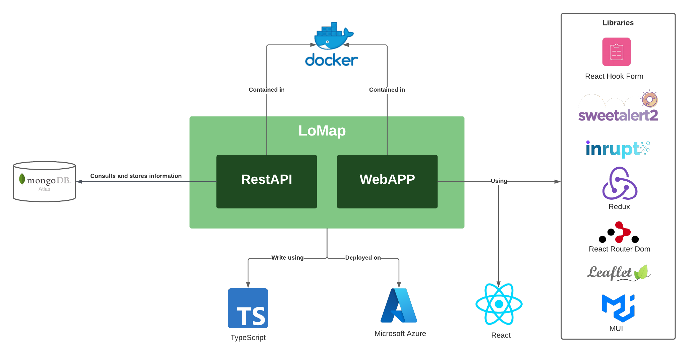
Usaremos las siguientes tecnologías:
| Tecnología | Descripción |
|---|---|
TypeScript |
Lenguaje utilizado para realizar la aplicación. |
React |
Biblioteca utilizada para crear interfaces de usuario en una sola página. |
MongoDB Atlas |
Base de datos utilizada para almacenar información relativa a la aplicación. |
Docker |
Sistema utilizado para almacenar la aplicación en contenedores para su posterior despliegue. |
Microsoft Azure |
Plataforma utilizada para desplegar la aplicación. |
Las librerías utilizadas se describen en el Anexo 13.2. Used Libraries
4. Solution Strategy
4.1. Decisiones tecnológicas
Como lenguaje de programación y fundamento de la aplicación hemos decidido utilizar TypeScript en contra parte de JavaScript, ya que el tipado estático de TypeScript nos facilitará entender el código creado por el resto del equipo. Además usaremos las siguientes tecnologías:
-
MongoDB: Base de datos NoSQL sencilla de gestionar. Y con la capacidad de desplegar en la nube gracias a MongoDB Atlas. Usaremos la librería mongoose para facilitar el manejo de la base de datos desde TypeScipt.
-
React: Biblioteca de JavaScript utilizada para crear la interfaz de la aplicación.
-
NodeJS: Permite la ejecución de JavaScript del lado del servidor, además de hacer la web fácilmente escalable.
4.2. Descomposición de Alto Nivel
4.2.1. Patrón de arquitectura
Utilizamos uno de los patrones de arquitectura más comunes hoy en día, que es el patrón modelo vista controlador (MVC). Permite originalmente desacoplar la interfaz de usuario, la lógica de control y el modelo de datos. Al MVC añadiremos una separación entre el dominio de la aplicación y la persistencia, ya que es más oportuno para esta aplicación.
4.3. Decisiones para alcanzar los criterios de calidad
-
Privacidad: Utilizaremos los PODs para mantener descentralizada la información privada de cada usuario, intentado guardar en la base de datos centralizada únicamente la información imprescindible.
-
Flexibilidad: Aunque el contrato de crear LoMap procede del ayuntamiento de Bruselas, generalizaremos el sistema para que pueda ser utilizado en cualquier otra ciudad.
-
Usabilidad: Para que cualquier persona sea capaz de utilizar de forma sencilla y cómoda la aplicación nos basaremos en las normas de los institutos de estandarización para la usabilidad en la web.
-
Mantenibilidad: Para conseguir una mantenibilidad adecuada nos basaremos en la arquitectura MVC y añadiremos algún otro patrón de diseño si es necesario, con el fin de que sea mantenible en el futuro.
4.4. Decisiones organizativas
La principal manera de comunicación del equipo será GitHub, por medio de la creación de Issues y el uso de Kanban, para organizar el trabajo y asignar los desarrolladores encargados de realizar las diferentes características. También hemos creado una rama por cada desarrollador con la intención de que cuando alguien ha terminado una funcionalidad se realice una pull request y el resto del equipo revise el código hasta dar su visto bueno y tener centralizado el desarrollo en una única rama.
5. Building Block View
5.1. Whitebox Overall System
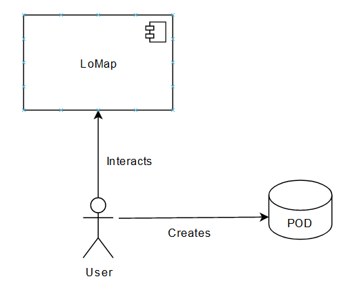
- Motivation
-
La aplicación LoMap es un sistema en el cual los usuarios disponen de mapas personalizados sobre lugares y negocios locales de la ciudad. Toda la información privada del usuario se guarda en su propio POD.
- Contained Building Blocks
| Name | Responsibility |
|---|---|
User |
Cliente de la aplicación |
LoMap |
Es el sistema en sí, sobre el cual interactuan los usuarios. |
POD |
Almacena la información personal de un usuario. Cada usuario tiene su propio POD. |
5.2. Level 2
- Motivation
-
Profundiza en como está construido internamente el servicio LoMap. Mostrando la diferenciacion entre la interfaz, que corresponde a la WebApp, el modelo de negocio que corresponde a la RestApi, y el almacenamiento general de información que corresponde a la base de datos.
- Contained Building Blocks
-
En este apartado describimos los bloques del nuevo nivel, y por tanto, no incluimos el usuario, LoMap en general y los PODs.
| Name | Responsibility |
|---|---|
WebApp |
Es la interfaz del sistema, a través de la cual el usuario interactuará para hacer todas sus peticiones. |
RestApi |
Se encarga de procesar las solicitudes de la interfaz y hacer las peticiones de información a la base de datos. |
Database |
Guarda solo información pública y visible por todos los usuarios, nunca información privada. |
5.3. Level 3
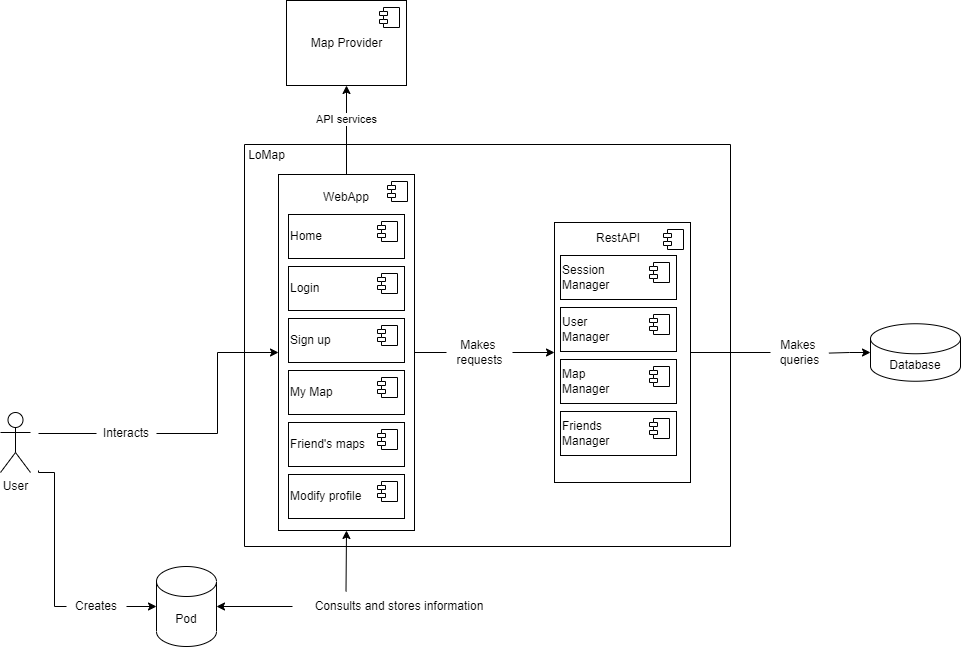
- Motivation
-
Profundiza en como está construido internamente la WebApp, que es la parte con la que interactúa el usuario. Se divide en los distintos componentes que conforman las acciones que puede realizar el usuario.
- Contained Building Blocks
-
En este apartado describimos los bloques del nuevo nivel, y por tanto, no incluimos los explicados en los otros niveles.
| Name | Responsibility |
|---|---|
Home |
Página principal de la aplicación que se muestra nada mas entrar. |
Registro |
Permite registrarte en la aplicación así como crear tu propio POD. |
Inicio sesión |
Si el usuario ya ha creado una cuenta, permite iniciar sesión en la misma. |
Filtrar sitios |
Permite al usuario mostrar las localizaciones que ha guardado aplicando diversos filtros. |
Añadir sitio |
Permite al usuario añadir a favoritos un establecimiento, añadiendolo también a su POD. |
6. Runtime View
Por el momento el contenido de este apartado no es muy extenso debido a la pronta etapa rn la que se encuentra em proyecto, a medida que se vaya avanzando este documento se irá actualizando y enriqueciendo.
6.1. First level of detail
6.1.1. User Sign Up
Proceso de crear un nuevo usuario

6.1.2. Login and Logout
El proceso de login y logout:

6.1.3. Edit web ID
Un usuario quiere cambiar su Web ID:

6.1.4. Place adding
Proceso de añadir un lugar al mapa:

6.2. Second level of detail
6.2.1. User Sign Up
Proceso de crear un nuevo usuario
6.2.2. Login and Logout
Proceso de crear un nuevo usuario
6.2.3. Edit profile
Un usuario quiere cambiar su perfil:
6.2.4. Place adding
Proceso de añadir un lugar al mapa:
7. Deployment View
7.1. Infrastructure Level 1
En el entorno de testing la app se ejecutará en los ordenadores de los desarrolladores de la aplicación. En este punto del desarrollo de la aplicación no es posible especificar cuál será la estructura de lanzamiento. Más adelante en el desarrollo del proyecto de completará la documentación para representar de forma fiel como se desplegará la aplicación.
La predicción es que nuestra aplicación va a tener dependencias con numerosas APIs. Tanto la API que usemos para el servicio de mapas como la usada para manejar los PODs no depende de nosotros. Estas dependencias externas provocan que el rendimiento y disponibilidad de nuestra aplicación se vea condicionada por estos servicios. En una etapa más madura del desarrollo se medirán tiempos de espera para poder concretar el rendimiento medio de la aplicación.
Nuestra infraestructura estará formada por los siguientes elementos:
-
PODs: Almacen individual de información, garantiza la privacidad del usuario.
-
Servidor: Contenedor de nuestra aplicación para despliegue. Todavía sin concretar.
-
WebApp: Front-end de nuestra aplicación.
-
RestApi: Back-end de nuestra aplicación.
-
MongoDB: En este punto, base de datos elegida para la aplicación. Con el uso de MongoDB Atlas para su despliegue y mongoose para su implementación.
8. Cross-cutting Concepts
This section describes overall, principal regulations and solution ideas that are relevant in multiple parts (= cross-cutting) of your system. Such concepts are often related to multiple building blocks. They can include many different topics, such as
-
domain models
-
architecture patterns or design patterns
-
rules for using specific technology
-
principal, often technical decisions of overall decisions
-
implementation rules
Concepts form the basis for conceptual integrity (consistency, homogeneity) of the architecture. Thus, they are an important contribution to achieve inner qualities of your system.
Some of these concepts cannot be assigned to individual building blocks (e.g. security or safety). This is the place in the template that we provided for a cohesive specification of such concepts.
The form can be varied:
-
concept papers with any kind of structure
-
cross-cutting model excerpts or scenarios using notations of the architecture views
-
sample implementations, especially for technical concepts
-
reference to typical usage of standard frameworks (e.g. using Hibernate for object/relational mapping)
A potential (but not mandatory) structure for this section could be:
-
Domain concepts
-
User Experience concepts (UX)
-
Safety and security concepts
-
Architecture and design patterns
-
"Under-the-hood"
-
development concepts
-
operational concepts
Note: it might be difficult to assign individual concepts to one specific topic on this list.

8.1. Modelo de dominio
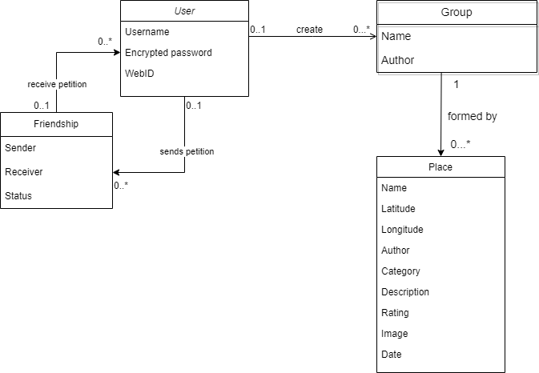
8.2. Seguridad
La seguridad es el objetivo principal de la aplicación. La app está basada en SOLID, lo que hace que los usuarios tengan el control de su información personal gestionándola ellos mismos a través de su propio POD. Los usuarios se registrarán en la aplicación eligiendo un usuario y contraseña, la cual será encriptada para velar por la seguridad del usuario en todo momento.
8.3. Usabilidad
Para la interfaz de usuario usaremos React junto con TypeScript. React facilita la creación de una interfaz de usuario interactiva la cual, además, queremos que sea lo más amigable posible con el fin de llegar a un mayor público y que la aplicación sea usada por muchos y distintos usuarios.
8.4. Escalabilidad y mantenimiento
Con el fin de que nuestra aplicación sea fácilmente escalable y mantenible se seguirán unos estándares de código. Se busca crear un código limpio, documentado y que siga unos patrones para facilitar su comprensión, el arreglo de bugs y añadir nuevas funcionalidades en un futuro.
9. Design Decisions
En la siguiente tabla, ordenadas por prioridad, se encuentran las decisiones arquitectónicas adoptadas en nuestro proyecto.
| Architectural decision | Advantages | Disadvantages | Link to the ADR |
|---|---|---|---|
TypeScript |
Permite la utilización de tipos estáticos, lo que nos llevará a cometer menos errores y a comprender de forma más sencilla el código realizado por los otros miembros del equipo. |
Ninguno ha utilizado este lenguaje, debemos familiarizarnos con él. |
|
React |
Biblioteca muy popular, utilizada por grandes empresas como Facebook, lo que hace atractivo su uso. Además, dispone de mucha documentación. |
Al igual que con TypeScript, no hemos utilizado con anterioridad esta biblioteca. |
|
NodeJS |
Dispone de muchas dependencias que facilitan el desarrollo del proyecto. Es un framework muy utilizado, por lo que dispone de una extensa documentación. |
Es necesario aprender como utilizar el framework con sus distintas dependencias. |
|
MongoDB |
Sistema de base de datos NoSQL orientadas a documentos, lo que hace sencillo su uso. Es fácil de integrar en el proyecto. |
No soporta transacciones complejas. |
|
Leaflet |
Leaflet es una biblioteca de JS open source utilizada para crear mapas interactivos y personalizarlos. |
Presenta limitaciones en funcionalidades avanzadas. |
|
JSON-LD |
Es una forma de representar datos JSON que se integra con otros formatos como RFD y Schema.org |
Su implementación puede requerir un mayor esfuerzo en comparación con otros métodos de marcado. |
|
Redux |
Esta biblioteca permite centralizar el estado de la aplicación y compartirlo entre los componentes que se suscriban a él de manera sencilla. |
Puede agregar complejidad a la aplicación web. |
|
Azure |
El proveedor de servidores en la nube Azure cuenta con las características necesarias para nuestra aplicación y ya estamos acostumbrados a su uso. |
La cuenta gratuita tiene un saldo limitado y a largo plazo es insostenible. |
|
Cloudinary |
Es un sistema sencillo de usar y, para el nivel de almacenamiento que requerimos, es gratuito. |
Si no se realizan bien las peticiones puede ocasionar errores cross-site. |
|
Axios |
Cliente HTTP muy sencillo de utilizar. |
Al nivel de nuestra aplicación no presenta desventajas. |
10. Quality Requirements
10.1. Quality Tree
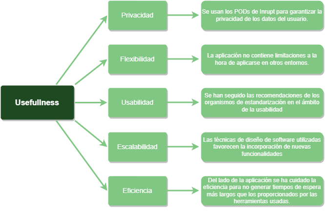
10.2. Quality Scenarios
| Escenario | Quality Goal Related | Descripción |
|---|---|---|
Un usuario quiere cambiar la localización de su POD |
Privacidad |
El usuario tiene que ser libre de ubicar sus datos donde quiera. La aplicación debe permitirle actualizar la referencia a su POD. Esto permite a cada usuario guardar sus datos donde y como quiera. |
Otro ayuntamiento quiere incorporar la aplicación en su ciudad |
Flexibilidad |
Nuestra aplicación debe tener una implementación adecuada. Debe usar los patrones y arquitecturas de diseño necesarias para que sea fácil modificar la aplicación para su uso en otra localización |
Se necesita añadir más funcionalidad |
Escalabilidad |
La aplicación esta recién creada. La funcionalidad solicitada actual no tiene porque ser la final. Debemos desarrollar un software escalable y preparado para añadir más requisitos. |
Un pico de carga en los servidores de la aplicación |
Eficiencia |
Es nuestra responsabilidad que nuestra aplicación sea eficiente y no haga los tiempos de espera ofrecidos por Inrupt aún mayores para cuidar la experiencia del usuario. |
Personas mayores o malas para la informática quieren usar la aplicación |
Usabilidad |
La aplicación debe ofrecer una interfaz amigable y sencilla. Tanto la gente mayor como la no habituada a usar aplicaciones deben de poder, si quieren, usarla sin problema. Accesibilidad orientada a la interfaz y sus características. |
11. Risks and Technical Debts
11.1. Risks
| Concepto | Explicación | Medidas a tomar |
|---|---|---|
Trabajo en grupo |
Al ser un equipo que carece de experiencia trabajando juntos la coordinación, comunicación y entendimiento son temas complejos y que requieren esfuerzo |
Trataremos de esforzarnos para poder desarrollar el proyecto con normalidad. La idea del grupo es ayudarnos entre nosotros y no dificultar el trabajo de los compañeros. |
Tiempo limitado |
Para desarrollar esta aplicación disponemos de un tiempo limitado, no solo por el alcance de la propia asignatura si no por la simultaneidad con otros proyectos de otras asignaturas |
La planificación del trabajo es imprescindible y si la logramos el resultado mejorará enormemente. |
Herramientas de trabajo nuevas |
Como grupo carecemos de experiencia y conocimiento a cerca de las herramientas y los entornos de trabajo con los que realizará el proyecto |
Al ser las herramientas más recomendadas para un proyecto como el nuestro debemos investigar, aprender y familiarizarnos con el uso de las mismas. |
Desconocimiento sobre los POD y SOLID |
La arquitectura SOLID basada en los POD es algo completamente nuevo para nosotros. Tanto el concepto como la forma de utilizarlas es algo que desconocemos y supone un obstáculo |
Tanto SOLID como los POD son extrictamente necesarios para lo que buscamos por lo que al igual que en el caso anterior es necesario investigar y aprender al respecto de estas herramientas. |
11.2. Technical Debts
-
La principal deuda técnica es la dependencia de Inrupt. Durante el desarrollo del trabajo hemos detectado mucha inestabilidad en sus servicios. En ocasiones tiene tiempos de respuesta muy altos. Además, es una API en desarrollo por lo que no podemos asegurar que sea perfectamente fucnional o que vaya a cambiar significativamente en el futuro y nuestra aplicación deje de funcionar.
-
La interoperabilidad no ha llegado a un acuerdo firme. Se han tomado decisiones sin meditar y puede generar problemas. Consideramos que el estandar de LoMap no ha tenido suficiente tiempo de desarrollo como para ser óptimo.
-
Nos ha sido imposible hacer una comprobación exhaustiva de bugs o la inclusión de funcionalidad extra debido al poco tiempo existente para el desarrollo del proyecto en comparación con la problemática percibida en general al usar las tecnologías impuestas por el profesorado.
12. Glossary
| Term | Translation | Definition |
|---|---|---|
POD |
POD |
Almacen personal de información que reside en la nube, dejando a decisión del dueño de dicho POD donde. |
SOLID |
SOLID |
Metodología de desarrollo web basada en los beneficios de los POD. Principalmente la privacidad. |
React |
React |
Librería que permite el uso de interfaces gráficas de forma sencilla. |
TypeScript |
TypeScript |
Lenguaje base del proyecto en el que se va a desarrollar el mismo. |
Quality Goal |
Objetivo de calidad |
Característica propia de la aplicación que se busca intencionadamente ya que brinda ciertos beneficios. |
Decentralized information |
Información descentralizada |
Base del sistema de POD que aumenta la privacidad de los usuarios y disminuye la carga del servidor. |
Graphical user interface |
Interfaz gráfica de usuario |
Diseño gráfico de la aplicación con el que interactua el usuario para manejar la aplicación. |
API (Application program interface) |
API (Interfaz de programación de aplicación) |
Servicio externo que se utiliza para que brinde ciertas funcionalidades y evitar su desarrollo. |
13. Appendix
13.1. Interface prototypes
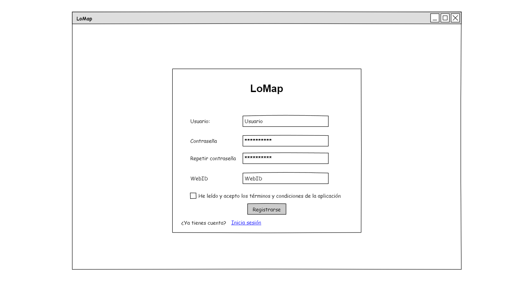
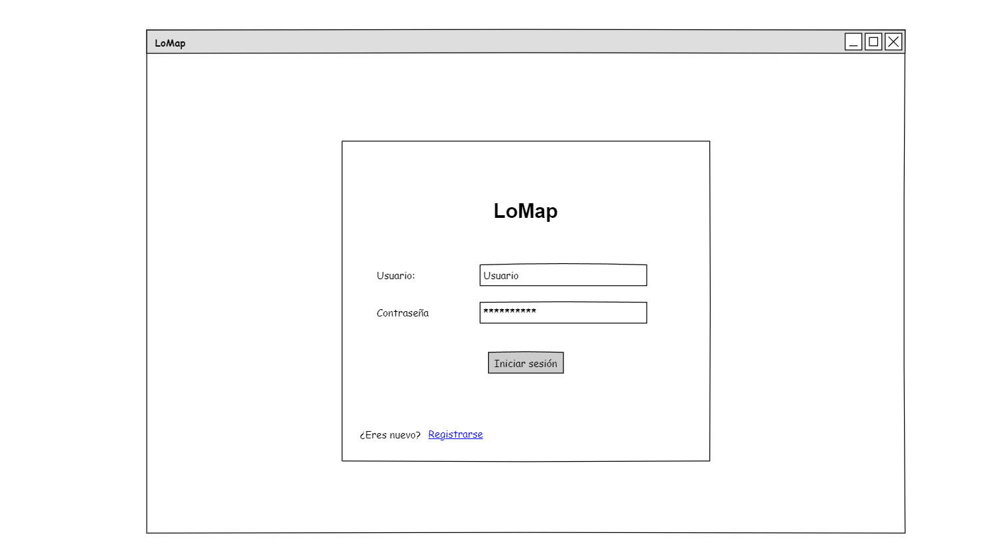
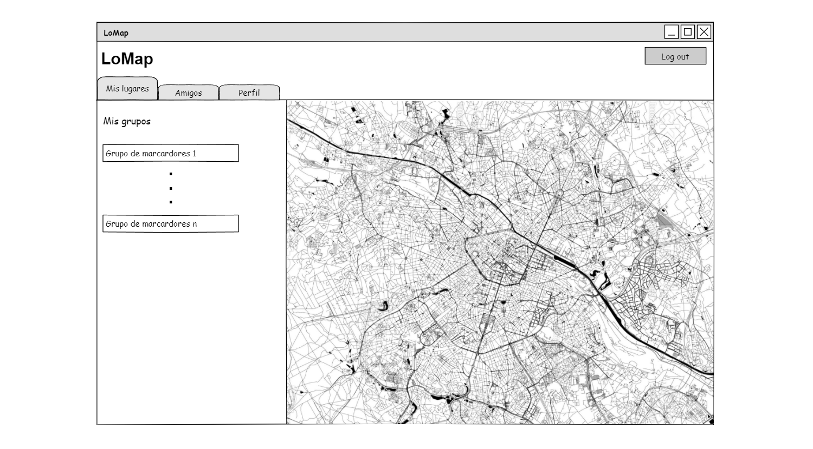
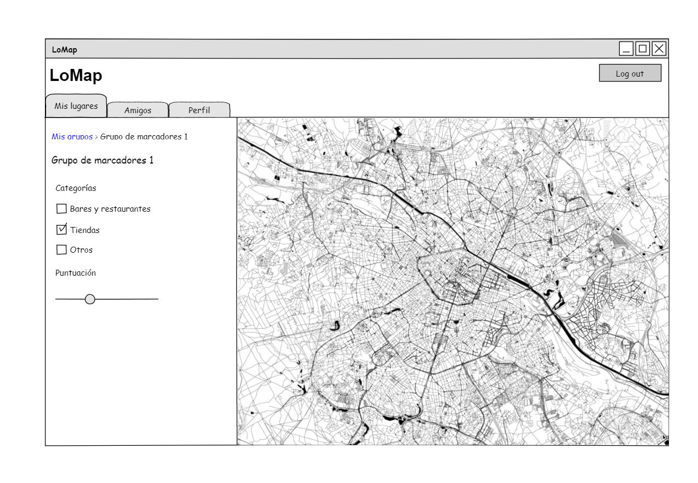
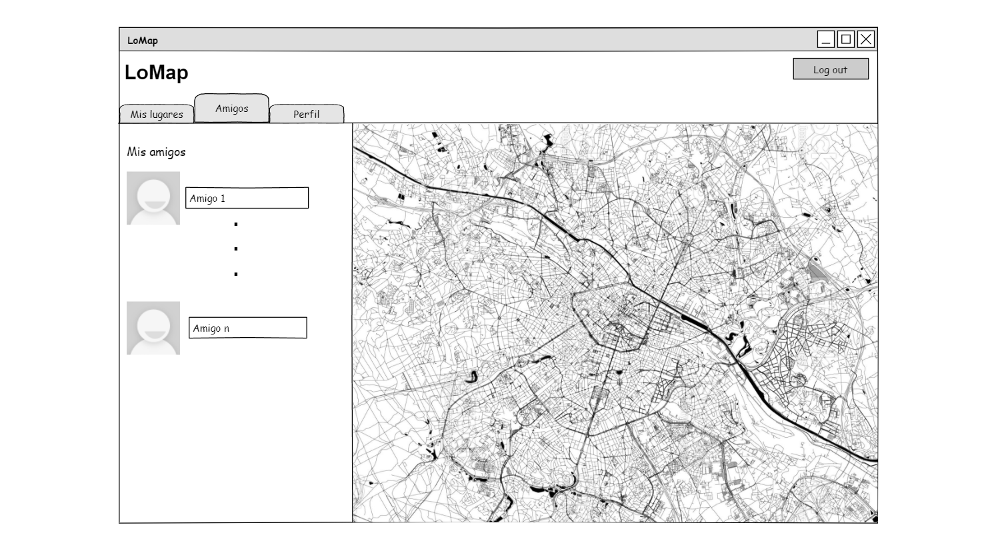
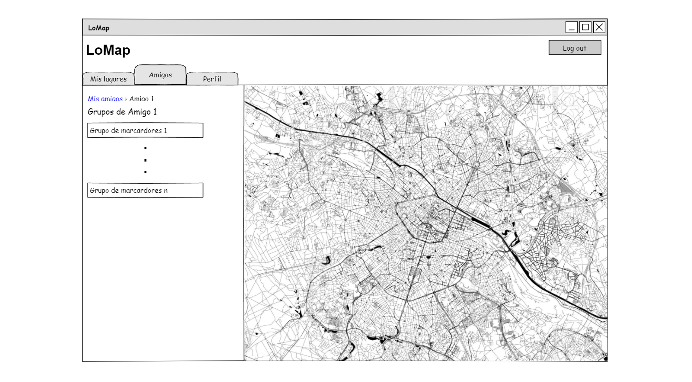
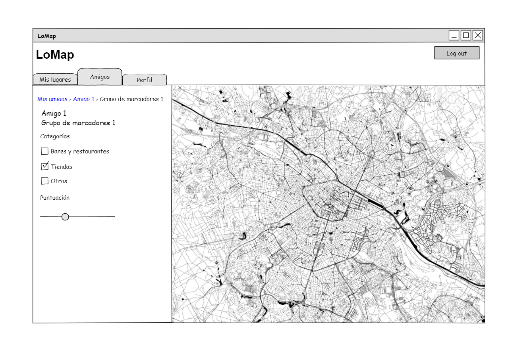
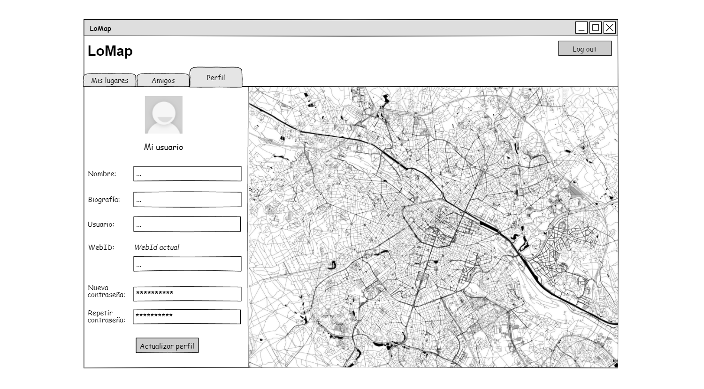
13.2. Used libraries
| Librería | Explicación |
|---|---|
Mui |
Facilita la creación de componentes altamente personalizables |
react-router-dom |
Librería usada para definir las rutas de navegación de la aplicación |
react-hook-form |
Simplifica la creación de formularios al hacer que la validación de los campos de estos sea sencilla. |
sweetalert2 |
Librería utilizada para mostrar ventanas emergentes, facilitando al usuario la comprensión de las acciones realizadas. |
leaflet |
Librería que adapta el uso de OpenStreetMap facilitando su implementación y de licencia gratuita. |
yup |
Validador de campos para los formularios que permite añadir mensajes de error personalidados. |
@inrupt/solid-ui-react |
Librería Inrupt utilizada para manejar los PODs. |
redux |
Librería que facilita el manejo de estado de la aplicación. |
| Librería | Explicación |
|---|---|
mongoose |
Librería que facilita la integración de una base de datos MongoDB y Node.js |
bcryptjs |
Librería de encriptado de contraseñas para dotar de seguridad a la APP. |
13.3. Interoperability
En la aplicación LoMap y con ámbito reducido a la asignatura de Arquitectura del Software de la Universidad de Oviedo se ha tratado de desarrollar una especificación para el almacenamiento de datos. Al día de la release final la especificación no ha llegado a un punto estable con un acuerdo generalizado. Ante la incertidumbre sobre la realidad detrás de la interoperabilidad planteada y por cuestiones de tiempo se ha decidido adoptar la estructura de datos pero no su ubicación. Solucionar bugs y hacer un despliegue correcto han sido tareas más prioritarias que nos han impedido investigar los fallos producidos por Inrupt al tratar de adoptar la especificación en su totalidad.
About arc42
arc42, the Template for documentation of software and system architecture.
By Dr. Gernot Starke, Dr. Peter Hruschka and contributors.
Template Revision: 7.0 EN (based on asciidoc), January 2017
© We acknowledge that this document uses material from the arc 42 architecture template, http://www.arc42.de. Created by Dr. Peter Hruschka & Dr. Gernot Starke.